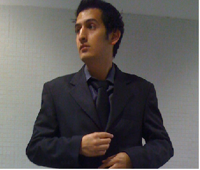

Formación profesional con actitud de servicio y competencia en TIC, capacidad de entender organizaciones
complejas, extraer requerimientos e identificar la solución TI adecuada; Administración de redes medianas/grandes,
plantear políticas de seguridad y protección y abordar la integración de los productos software de comunicaciones
de mayor implantación en el mercado.
Conocimientos en el funcionamiento, instalación, configuracion, operación y mantenimiento de las redes 2G, 3G y 4G<